A Meditative Journey of Faith
The Stations of the Cross, also known as the Way of the Cross, is a powerful Christian devotion that commemorates the Passion of Jesus Christ. It consists of 14 stations, each representing a specific event from Jesus's condemnation to His burial. This devotion invites believers to reflect deeply on the suffering and sacrifice of Christ, fostering a spirit of empathy, repentance, and gratitude.
We begin...Lord Jesus, as we walk this path of suffering with You, open our hearts to the depth of Your love and sacrifice. May we find strength in Your example and grace in Your mercy. Help us to carry our own crosses with faith and courage, and to see You in the faces of those who suffer around us. Amen.
All:My Lord Jesus Christ, you have made this journey to die for me with unutterable love, and I have so many times unworthily abandoned you; but now I love you with my whole heart, and because I love you I repent sincerely for having ever offended you. Pardon me, my God, and permit me to accompany you on this journey. You go to die for love of me; I wish also, my beloved Redeemer, to die for love of you. My Jesus, I will live and die always united to you
At the cross her station keeping
Stood the mournful Mother weeping
Close to Jesus to the last
Stabat Mater dolorosa,
Juxta crucem lacrymosa,
Dum pendebat Filius.
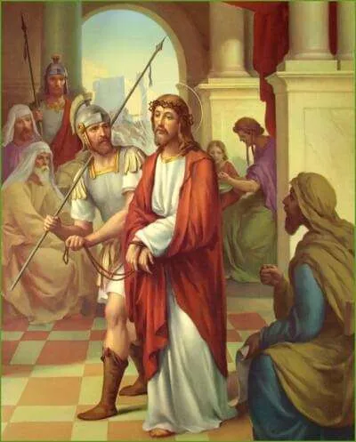
Leader: (genuflecting) We adore you, O Christ, and we praise you.
All: Because by your holy cross you have redeemed the world.
Leader: Consider how Jesus, after having been scourged and crowned with thorns, was unjustly condemned by Pilate to die on the cross.
All:My loving Jesus it was not Pilate; no, it was my sins that condemned you to die. I beseech you, by the merits of this sorrowful journey, to assist my soul in its journey toward eternity
(All Kneel..)All: I love you, Jesus, my love, above all things; I repent with my whole heart of having offended you. Never permit me to separate myself from you again. Grant that I may love you always; and then do with me what you will.
Our Father, Hail Mary, Glory be.
Through her heart, his sorrow sharing,
All his bitter anguish bearing,
Now at length the sword has passed
Cujus animam gementem
Contristatam et dolentem,
Per transivit gladius.
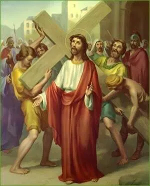
Leader: (genuflecting) We adore you, O Christ, and we praise you.
All: Because by your holy cross you have redeemed the world.
Leader: Consider how Jesus, in making this journey with the cross on his shoulders, thought of us, and offered for us to his Father the death he was about to undergo.
All:My most beloved Jesus! I embrace all the tribulations you have destined for me until death. I beseech you, by the merits of the pain you suffered in carrying your cross, to give me the necessary help to carry mine with perfect patience and resignation.
(All Kneel..)All: I love you, Jesus, my love, above all things; I repent with my whole heart of having offended you. Never permit me to separate myself from you again. Grant that I may love you always; and then do with me what you will.
Our Father, Hail Mary, Glory be.
O, how sad and sore distressed
Was that Mother highly blessed
Of the sole Begotten One.
O quam tristis et afflicta
Fruit illa benedicta
Mater Unigeniti!
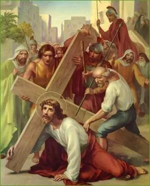
Leader: (genuflecting) We adore you, O Christ, and we praise you.
All: Because by your holy cross you have redeemed the world.
Leader: Consider this first fall of Jesus under his cross. His flesh was torn by the scourges, his head was crowned with thorns; he had lost a great quantity of blood. So weakened he could scarcely walk. He yet had to carry this great load upon his shoulders. The soldiers struck him rudely and he fell several times.
All: My Jesus, it is the weight, not of the cross, but of my sins, which has made you suffer so much pain. By the merits of this first fall, deliver me from the misfortune of falling into moral sin.
(All Kneel..)All: I love you, Jesus, my love, above all things; I repent with my whole heart of having offended you. Never permit me to separate myself from you again. Grant that I may love you always; and then do with me what you will.
Our Father, Hail Mary, Glory be.
Christ above in torments hangs,
She beneath beholds the pangs
Of her dying glorious Son.
Christus in tormentis suspenditur,
Ipsa infra angores spectat
Filii sui morientis gloriam.
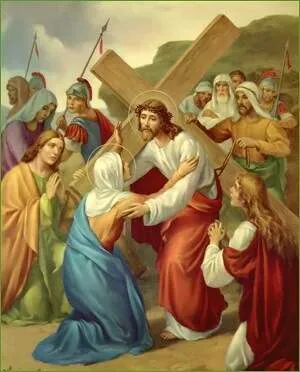
Leader: (genuflecting) We adore you, O Christ, and we praise you.
All: Because by your holy cross you have redeemed the world.
Leader: Consider the meeting of the Son and the mother, which took place on this journey. Their looks became like so many arrows to wound those hearts which love each other so tenderly.
All: My sweet Jesus, by the sorrow you experienced in this meeting, grant me the grace of a devoted love for your holy mother. And you, my queen, who were overwhelmed with sorrow, obtain for me a continual and tender remembrance of the passion of your son.
(All Kneel..)All: I love you, Jesus, my love, above all things; I repent with my whole heart of having offended you. Never permit me to separate myself from you again. Grant that I may love you always; and then do with me what you will.
Our Father, Hail Mary, Glory be.
Is there one who would not weep,
Whelmed in miseries so deep,
Christ's dear Mother to behold?
Quis est homo qui non fleret
Matrem Christi si videret
In tanto supplicio?
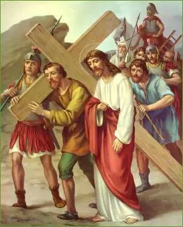
Leader: (genuflecting) We adore you, O Christ, and we praise you.
All: Because by your holy cross you have redeemed the world.
Leader: Consider how his cruel tormentors, seeing Jesus was on the point of expiring, and fearing he would die on the way, whereas they wished him to die the shameful death of the cross, constrained Simon of Cyrene to carry the cross behind our Lord.
All: My most beloved Jesus, by your grace I will not refuse to carry the cross; I accept it, I embrace it. I accept in particular the death you have destined for me, with all the pains which may accompany it; I unite it to your death, I offer it of you. You have died for love of me; I will die for love of you. Help me by your grace.
(All Kneel..)All: I love you, Jesus, my love, above all things; I repent with my whole heart of having offended you. Never permit me to separate myself from you again. Grant that I may love you always; and then do with me what you will.
Our Father, Hail Mary, Glory be.
Can the human heart refrain,
From partaking in her pain,
In that mother's pain untold?
Quis non posset contristari,
Christi Matrem contemplari
Dolentem cum Filio?
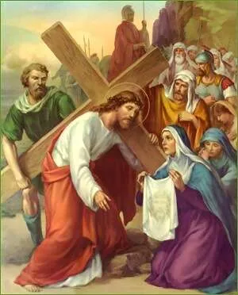
Leader: (genuflecting) We adore you, O Christ, and we praise you.
All: Because by your holy cross you have redeemed the world.
Leader: Consider how the holy woman named Veronica, seeing Jesus so ill-used, and bathed in sweat and blood, wiped his face with a towel, on which was left the impression of his holy countenance.
All: My beloved Jesus! Your face was beautiful before, but in this journey it has lost all its beauty, and wounds and blood have disfigured it. Alas! My soul also was once beautiful, when it received your grace in baptism; but I have disfigured it by my sins; you alone, my Redeemer, can restore it to its former beauty. Do this by your passion, O Jesus!
(All Kneel..)All: I love you, Jesus, my love, above all things; I repent with my whole heart of having offended you. Never permit me to separate myself from you again. Grant that I may love you always; and then do with me what you will.
Our Father, Hail Mary, Glory be.
Bruised, derided, cursed, defiled
She beheld her tender child,
All with bloody scourges rent.
Pro peccatis suae gentis,
Vidit Jesum in tormentis,
Et flagellis subditum.
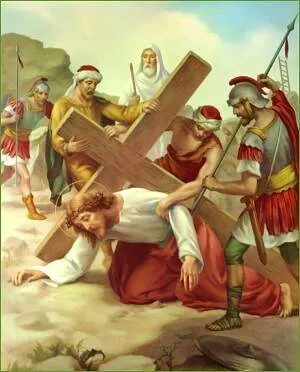
Leader: (genuflecting) We adore you, O Christ, and we praise you.
All: Because by your holy cross you have redeemed the world.
Leader: Consider the second fall of Jesus under the cross; a fall which renews the pain of all the wounds in his head and members.
All: My Jesus, how many times have I fallen again, and begun again to offend you. By the merits of this second fall, give me the grace until death. Grant that in all temptations which assail me I may always commend myself to you.
(All Kneel..)All: I love you, Jesus, my love, above all things; I repent with my whole heart of having offended you. Never permit me to separate myself from you again. Grant that I may love you always; and then do with me what you will.
Our Father, Hail Mary, Glory be.
For the sins of his own nation,
Saw him hang in desolation,
Till his spirit forth he sent.
Vidit suum dulcem natum
Moriendo, desolatum,
Dum emisit spiritum.
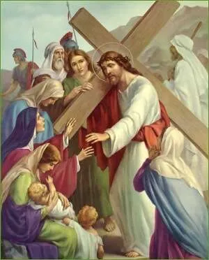
Leader: (genuflecting) We adore you, O Christ, and we praise you.
All: Because by your holy cross you have redeemed the world.
Leader: Consider how these women wept with compassion at seeing Jesus in such a pitiable state, streaming with blood as he walked along. 'Daughters of Jerusalem', he said, 'weep not for me, but for yourselves and your children.'
All: My Jesus, laden with sorrows! I weep for the offences I have committed against you because of the pains they have deserved, and still more because of the displeasures they have caused you, who have loved me so much. It is your love more than the fear of hell, which causes me to weep for my sins.
(All Kneel..)All: I love you, Jesus, my love, above all things; I repent with my whole heart of having offended you. Never permit me to separate myself from you again. Grant that I may love you always; and then do with me what you will.
Our Father, Hail Mary, Glory be.
O thou mother! Fount of love!
Touch my spirit from above.
Make my heart with thine accord.
Eia Mater, fons amoris,
Me sentire vim doloris.
Fac, ut tecum lugeam.
Leader: (genuflecting) We adore you, O Christ, and we praise you.
All: Because by your holy cross you have redeemed the world.
Leader: Consider the third fall of Jesus Christ. His weakness was extreme, and the cruelty of his executioners excessive, who tried to hasten his steps when he could scarcely move.
All: My outraged Jesus, by the merits of the weakness you suffered in going to Calvary, give me the strength to conquer all human respect, and my wicked passions, which have led me to despise your friendship.
(All Kneel..)All: I love you, Jesus, my love, above all things; I repent with my whole heart of having offended you. Never permit me to separate myself from you again. Grant that I may love you always; and then do with me what you will.
Our Father, Hail Mary, Glory be.
Make me feel as you have felt;
Make my soul to glow and melt,
With the love of Christ my Lord.
Fac, ut ardeat cor meum
In amando Christum Deum,
Ut sibi complaceam.
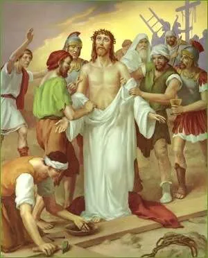
Leader: (genuflecting) We adore you, O Christ, and we praise you.
All: Because by your holy cross you have redeemed the world.
Leader: Consider the violence with which Jesus was stripped by the executioners. His inner garments adhered to his torn flesh, and they dragged them off so roughly that the skin came with them, compassionate your Saviour thus cruelly treated.
All: My most innocent Jesus! By the merits of the torment you have felt, help me to strip myself of all affection to things of earth, in order that I may place all my love in you who are so worthy of my love.
(All Kneel..)All: I love you, Jesus, my love, above all things; I repent with my whole heart of having offended you. Never permit me to separate myself from you again. Grant that I may love you always; and then do with me what you will.
Our Father, Hail Mary, Glory be.
Holy mother! Pierce me through;
In my heart each wound renew,
Of my Saviour crucified.
Sancta Mater istud agas,
Crucifixi fige plagas
Cordi meo valide.
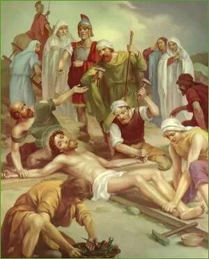
Leader: (genuflecting) We adore you, O Christ, and we praise you.
All: Because by your holy cross you have redeemed the world.
Leader: Consider how Jesus, having been placed upon the cross, extended his hands, and offered to his eternal Father the sacrifice of his life for our salvation. Those barbarians fastened him with nails, and then, securing the cross, allowed him to die with anguish on this infamous gibbet.
All: My Jesus, loaded with contempt, nail my heart to your feet, that it may ever remain there, to love you, and never more to leave you.
(All Kneel..)All: I love you, Jesus, my love, above all things; I repent with my whole heart of having offended you. Never permit me to separate myself from you again. Grant that I may love you always; and then do with me what you will.
Our Father, Hail Mary, Glory be.
Let me share with you his pain.
Who for all my sins was slain,
Who for me in torments died.
Tui nati vulnerati,
Tam dignati pro me pati
Poenas mecum divide.
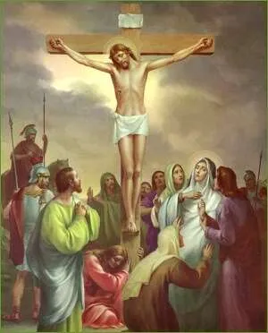
Leader: (genuflecting) We adore you, O Christ, and we praise you.
All: Because by your holy cross you have redeemed the world.
Leader: Consider how Jesus, being consumed with anguish after three hours' agony on the cross, abandoned himself to the weight of his body, bowed his head and died.
All: O my dying Jesus! I kiss devoutly the cross on which you died for love of me. I have merited by my sins to die a miserable death, but your death is my hope. By the merits of your death, give me the grace to die embracing your feet, and burning with love for you, I commit my soul into your hands.
All: I love you, Jesus, my love, above all things; I repent with my whole heart of having offended you. Never permit me to separate myself from you again. Grant that I may love you always; and then do with me what you will.
Our Father, Hail Mary, Glory be.
Let me mingle tears with you,
Mourning his death through and through,
All the days that I may live.
Fac me tecum pie flere,
Crucifixo condolere,
Donec ego vixero.
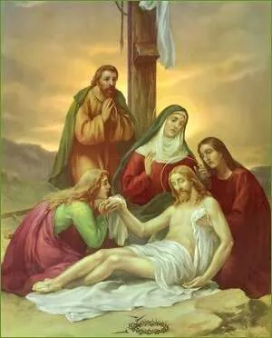
Leader: (genuflecting) We adore you, O Christ, and we praise you.
All: Because by your holy cross you have redeemed the world.
Leader: Consider how, after our Lord had expired, two of his disciples, Joseph and Nicodemus, took him down from the cross, and placed him in the arms of his afflicted mother, who received him to her bosom.
All: O mother of sorrow, for the love of this son, accept me for your servant, and pray for me. And you, my redeemer, since you have died for me, permit me to love you; for I wish but you, and nothing more.
(All Kneel..)All: I love you, Jesus, my love, above all things; I repent with my whole heart of having offended you. Never permit me to separate myself from you again. Grant that I may love you always; and then do with me what you will.
Our Father, Hail Mary, Glory be.
By the cross with you to stay:
There with you to weep and pray,
Is all I ask of you to give.
Juxta crucem tecum stare,
Et me tibi sociare,
In planctu desidero
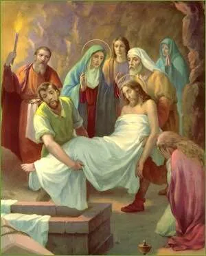
Leader: (genuflecting) We adore you, O Christ, and we praise you.
All: Because by your holy cross you have redeemed the world.
Leader: Consider how the disciples, accompanied by his holy mother, carried the body of Jesus to bury it. They closed the tomb, and all came sorrowfully away.
All: My buried Jesus! I kiss the stone that encloses you. But you rose again on the third day. I beseech you, by your resurrection, to make me rise in glory with you at the last day, to be always united with you in heaven, to praise you and love you for ever.
(All Kneel..)All: I love you, Jesus, my love, above all things: I repent with my whole heart of having offended you. Never permit me to separate myself from you again. Grant that I may love you always; and then do with me what you will.
Our Father, Hail Mary, Glory be.
Virgin of all virgins blest!
Listen to my fond request:
Let me share your grief divine.
Virgo virginum praeclara,
Mihi jam nos sis amara,
Fac me tecum plangere.
Priest: We say together, for the intentions of the Holy Father Pope Francis, and for the intentions of all those who have participated in this devotion, the following prayer:
Our Father, Hail Mary, Glory be.
All: O most holy Mother, Queen of Sorrows, who followed your beloved Son through all the Way of the Cross, and whose heart was pierced with a fresh sword of grief at all the stations of that most sorrowful journey, obtain for us, we beseech you, O most loving Mother, a perpetual remembrance of our Blessed Saviour’s Cross and Death, and a true and tender devotion to all the mysteries of his most holy Passion.
Obtain for us the grace to hate sin, even as he hated it in the agony in the garden; to endure wrong and insult with all patience as he endured them in the judgement hall; to be meek and humble in all our trials as he was before his judges; to love our enemies even as he loved his murderers, and prayed for them upon the Cross; and to glorify God and to do good to our neighbour, even as he did in every mystery of his suffering.
O Queen of Martyrs, who by the Dolours of your Immaculate Heart on Calvary, merited to share the Passion of our Most Holy Redeemer, obtain for us some portion of your compassion, that for the love of Jesus crucified, we may be crucified to the world in this life, and in the life to come may, by his infinite merits and your powerful intercession, reign with him in glory everlasting.
Amen.